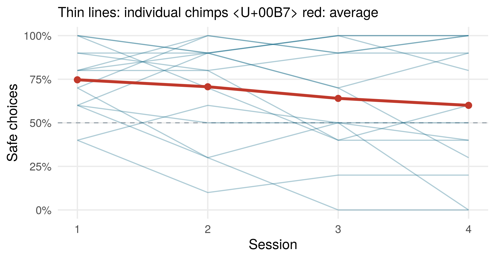
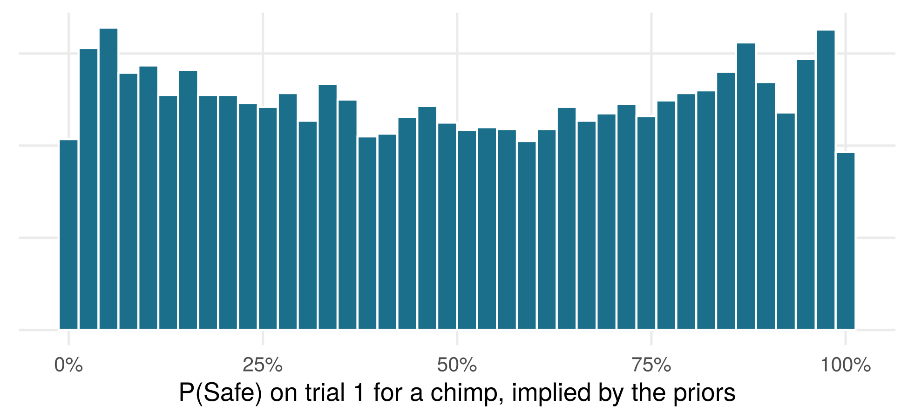
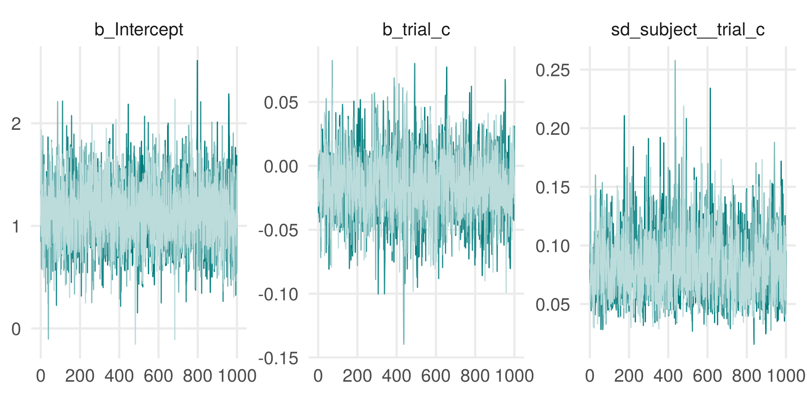
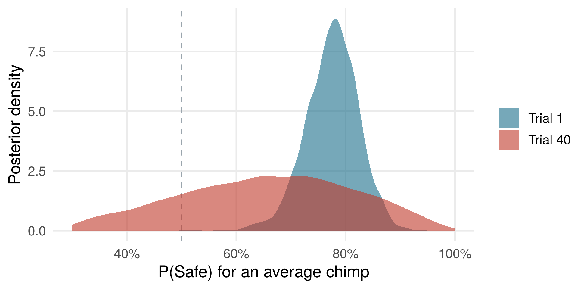
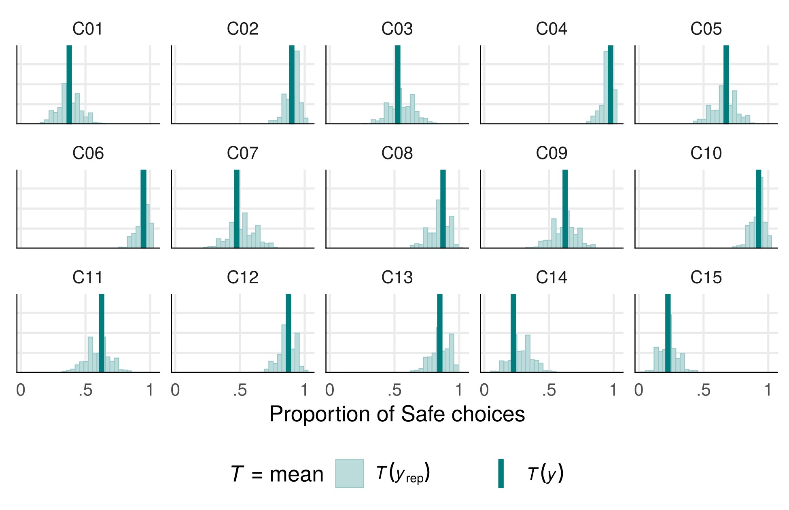
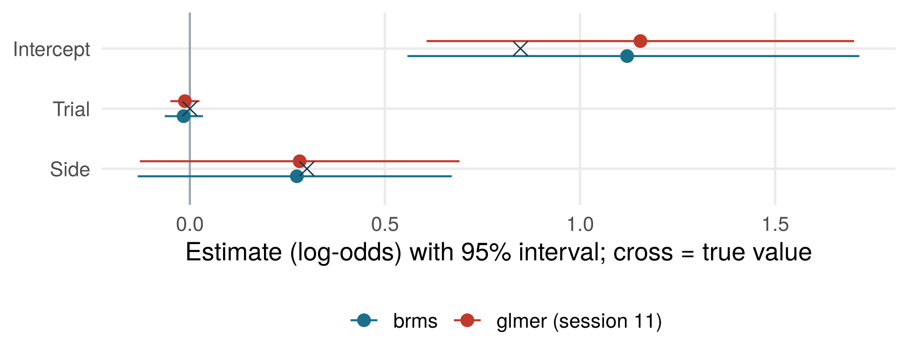

Short workshop on demand · after Linear Models in R
What is brms?
brms is an R package for fitting Bayesian regression models, from simple linear models to complex multilevel models. You write the same formula syntax as in lme4, e.g. y ~ x + (1 | id). brms translates the model into Stan, which estimates the posterior distribution of all parameters.
This makes brms an easy entry into Bayesian modelling for anyone who knows the models from Linear Models in R: the models stay the same, only the way of estimating them and of drawing conclusions changes.
Topics
Bayesian inference in a nutshell: prior, likelihood, posterior
Choosing and checking priors (prior predictive checks)
Fitting the course models in brms: linear models, GLMs, GLMMs
Convergence diagnostics and posterior predictive checks
We return to the example from session 11. Chimpanzees choose into which of two boxes a grape is dropped. The Safe box clearly guarantees delivery; in the Risky box, the grape seems to get stuck. In fact, both boxes always deliver.
RQ1: Do chimps prefer the Safe box on trial 1?
RQ2: Does this preference change over trials?
The study (with the MPI EVA, Leipzig) is preregistered, but the data do not exist yet. As in session 11, we use simulated data of what we expect: 15 chimps × 4 sessions × 10 trials, with an initial Safe preference (P = .70), no average change over trials, but chimps that differ in whether they drift towards Safe or Risky. So we know the true answer.
The data
Simulation code (same as session 11)
side_sequence<-function(){# 5 x right, 5 x left; max. 2 in a rowrepeat{s<-sample(rep(0:1, 5))if(max(rle(s)$lengths)<=2)return(s)}}sim_chimps<-function(n=15, b0=qlogis(0.70), b.trial=0, b.side=0.3,sd.int=0.8, sd.slope=0.05){ids<-sprintf("C%02d", 1:n)u0<-setNames(rnorm(n, 0, sd.int), ids); u1<-setNames(rnorm(n, 0, sd.slope), ids)d<-do.call(rbind, lapply(ids, function(id)data.frame(subject =id, session =rep(1:4, each =10), trial =1:40, side_safe =unlist(replicate(4, side_sequence(), simplify =FALSE)))))d$trial_c<-d$trial-1# first-trial centred (as preregistered)eta<-b0+u0[d$subject]+(b.trial+u1[d$subject])*d$trial_c+b.side*d$side_safed$safe<-rbinom(nrow(d), 1, plogis(eta))d}set.seed(120)chimps<-sim_chimps()
Code
by_sess<-aggregate(safe~subject+session, data =chimps, FUN =mean)avg<-aggregate(safe~session, data =chimps, FUN =mean)ggplot(by_sess, aes(session, safe))+geom_hline(yintercept =.5, linetype =2, colour =col_muted)+geom_line(aes(group =subject), colour =col_teal, alpha =.35)+geom_line(data =avg, colour =col_red, linewidth =1.3)+geom_point(data =avg, colour =col_red, size =2.5)+scale_y_continuous(labels =scales::percent, limits =c(0, 1))+labs(x ="Session", y ="Safe choices", subtitle ="Thin lines: individual chimps · red: average")

Step 1: the GLMM from session 11
glmm<-glmer(safe~trial_c+side_safe+(1+trial_c|subject), family =binomial, data =chimps, control =glmerControl(optimizer ="bobyqa"))
A Bayesian model needs a prior for every parameter. We use weakly informative priors on the log-odds scale: they rule out absurd values but leave the data in charge.
priors<-c(prior(normal(0, 1.5), class ="Intercept"), # P(Safe) on trial 1prior(normal(0, 1), class ="b"), # trial and side effectsprior(exponential(1), class ="sd"), # between-chimp SDsprior(lkj(2), class ="cor"))# intercept-slope correlation
What do these priors imply before seeing any data? A prior predictive check translates them into chimp-level choice probabilities on trial 1:
Code
set.seed(1)p_trial1<-plogis(rnorm(1e4, 0, 1.5)+rnorm(1e4, 0, rexp(1e4, 1)))ggplot(data.frame(p =p_trial1), aes(p))+geom_histogram(bins =40, fill =col_teal, colour ="white")+scale_x_continuous(labels =scales::percent)+labs(x ="P(Safe) on trial 1 for a chimp, implied by the priors", y =NULL)+theme(axis.text.y =element_blank())

The priors allow anything from a strong Risky to a strong Safe preference. They put somewhat more weight on extreme preferences than on 50%; a narrower intercept prior, e.g. normal(0, 1), would flatten this.
Step 3: fit the model
The formula is exactly the one from glmer(). bernoulli is the binomial family for single 0/1 choices.
fit<-brm(safe~trial_c+side_safe+(1+trial_c|subject), family =bernoulli, data =chimps, prior =priors, chains =4, iter =2000, cores =4, seed =2026)
#> Family: bernoulli
#> Links: mu = logit
#> Formula: safe ~ trial_c + side_safe + (1 + trial_c | subject)
#> Data: chimps (Number of observations: 600)
#> Draws: 4 chains, each with iter = 2000; warmup = 1000; thin = 1;
#> total post-warmup draws = 4000
#>
#> Group-Level Effects:
#> ~subject (Number of levels: 15)
#> Estimate Est.Error l-95% CI u-95% CI Rhat Bulk_ESS
#> sd(Intercept) 0.63 0.33 0.06 1.34 1.00 1409
#> sd(trial_c) 0.08 0.03 0.04 0.14 1.00 1226
#> cor(Intercept,trial_c) 0.20 0.36 -0.53 0.82 1.01 791
#> Tail_ESS
#> sd(Intercept) 1440
#> sd(trial_c) 2046
#> cor(Intercept,trial_c) 1284
#>
#> Population-Level Effects:
#> Estimate Est.Error l-95% CI u-95% CI Rhat Bulk_ESS Tail_ESS
#> Intercept 1.12 0.30 0.56 1.72 1.00 3636 3105
#> trial_c -0.02 0.02 -0.06 0.03 1.00 1916 2096
#> side_safe 0.27 0.21 -0.13 0.67 1.00 5164 2971
#>
#> Draws were sampled using sampling(NUTS). For each parameter, Bulk_ESS
#> and Tail_ESS are effective sample size measures, and Rhat is the potential
#> scale reduction factor on split chains (at convergence, Rhat = 1).
All Rhat values are 1.00 and the effective sample sizes (ESS) are large, so the four chains agree. The trace plots should look like “hairy caterpillars”, with no chain drifting off:
Code
bayesplot::mcmc_trace(as.array(fit), pars =c("b_Intercept", "b_trial_c", "sd_subject__trial_c"), facet_args =list(ncol =3))+theme(legend.position ="none")

Step 4: answer the research questions with the posterior
The posterior is a distribution, so we can answer the research questions on the response scale and as probabilities.
draws<-as_draws_df(fit)# P(Safe) for an average chimp, averaged over the two sidesp1<-plogis(draws$b_Intercept+0.5*draws$b_side_safe)# trial 1p40<-plogis(draws$b_Intercept+39*draws$b_trial_c+0.5*draws$b_side_safe)# trial 40
Code
post<-rbind(data.frame(trial ="Trial 1", p =p1), data.frame(trial ="Trial 40", p =p40))ggplot(post, aes(p, fill =trial))+geom_vline(xintercept =.5, linetype =2, colour =col_muted)+geom_density(alpha =.6, colour =NA)+scale_fill_manual(values =c(col_teal, col_red), name =NULL)+scale_x_continuous(labels =scales::percent, limits =c(.3, 1))+labs(x ="P(Safe) for an average chimp", y ="Posterior density")

RQ1: On trial 1, an average chimp chooses the Safe box with probability 0.78, 95% credible interval [0.68, 0.86]. The posterior probability that chimps prefer the Safe box, i.e. that P(Safe) > .5, is > .99.
RQ2: From trial 1 to trial 40, P(Safe) changes by -0.13, 95% CrI [-0.55, 0.17]. The interval is wide: these data cannot rule out a moderate change in either direction. Whether the change is practically zero is a question for an equivalence test or a ROPE (see TAE).
The model-implied learning curve, with 95% credible band:
A posterior predictive check simulates new datasets from the fitted model and compares them with the observed data. Here: the proportion of Safe choices for each chimp.
Code
pp_check(fit, type ="stat_grouped", stat ="mean", group ="subject", ndraws =1000)+facet_wrap(~group, ncol =5)+scale_x_continuous(breaks =c(0, .5, 1), labels =c("0", ".5", "1"))+labs(x ="Proportion of Safe choices")+theme(legend.position ="bottom")

The observed proportions (dark lines) lie well within the simulated ones for every chimp.
Log-odds scale. glmer reports no intervals for the variance components by default.
Parameter
True value
glmer: estimate [95% CI]
brms: mean [95% CrI]
Intercept (trial 1)
0.85
1.15 [0.61, 1.70]
1.12 [0.56, 1.72]
Trial
0.00
-0.01 [-0.05, 0.02]
-0.02 [-0.06, 0.03]
Side
0.30
0.28 [-0.13, 0.69]
0.27 [-0.13, 0.67]
SD intercept
0.80
0.60
0.63 [0.06, 1.34]
SD trial slope
0.05
0.06
0.08 [0.04, 0.14]
Correlation
0.00
0.49
0.20 [-0.53, 0.82]
Code
cmp<-data.frame( par =rep(c("Intercept", "Trial", "Side"), 2), model =rep(c("glmer (session 11)", "brms"), each =3), est =c(cf[, 1], fe_b[, 1]), lo =c(ci[, 1], fe_b[, 3]), hi =c(ci[, 2], fe_b[, 4]))cmp$par<-factor(cmp$par, levels =rev(c("Intercept", "Trial", "Side")))truth<-data.frame(par =factor(c("Intercept", "Trial", "Side"), levels =levels(cmp$par)), est =c(qlogis(.7), 0, .3))ggplot(cmp, aes(est, par, colour =model))+geom_vline(xintercept =0, colour =col_muted)+geom_pointrange(aes(xmin =lo, xmax =hi), position =position_dodge(width =.5))+geom_point(data =truth, aes(est, par), inherit.aes =FALSE, shape =4, size =3, colour =col_navy)+scale_colour_manual(values =c(col_teal, col_red), name =NULL)+labs(x ="Estimate (log-odds) with 95% interval; cross = true value", y =NULL)+theme(legend.position ="bottom")

What stays the same, and what changes
The estimates agree. With weakly informative priors and 600 observations, the posterior means and credible intervals are very close to the glmer() estimates and confidence intervals. Bayesian modelling is not a different model, but a different way of estimating it.
The interpretation changes. A 95% credible interval contains the parameter with 95% probability, given model and priors. That is how most people (mis)read a confidence interval anyway. And we can directly state things like “the probability that chimps prefer the Safe box on trial 1 is > .99”.
Uncertainty about the variance components is visible.glmer() gives only point estimates for the between-chimp SDs; brms gives full intervals. The wide interval for the SD of the intercept shows how little 15 chimps tell us about individual differences.
Complex random-effects structures become easier. With only 15 individuals, glmer() often runs into convergence warnings or singular fits. The priors keep brms stable, which helps with the maximal random-effects structures recommended for confirmatory tests.
The price: more computing time (here a few minutes instead of a second) and the need to choose and justify priors.
Prerequisites
Linear Models in R. Please install brms and a Stan backend (rstan or cmdstanr) before the workshop.
Reading
Bürkner, P.-C. (2017). brms: An R package for Bayesian multilevel models using Stan. Journal of Statistical Software, 80(1), 1–28.
Gabry, J., Simpson, D., Vehtari, A., Betancourt, M., & Gelman, A. (2019). Visualization in Bayesian workflow. Journal of the Royal Statistical Society: Series A, 182(2), 389–402.
McElreath, R. (2020). Statistical rethinking (2nd ed.). CRC Press.